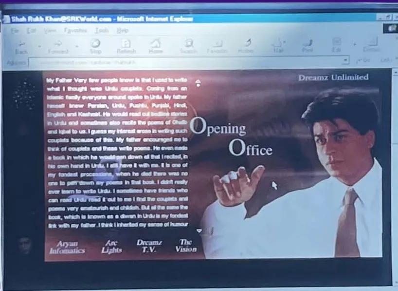

Chapter 7
Opening Office · The institution, 2004 to 2009

SRKWorld.com, 2000: "Opening Office", with Dreamz Unlimited, Arc Lights, Dreamz TV and The Vision. (Archive: the author's collection)
He came out of 2003 with a repaired spine and without his first company. The partnership in Dreamz Unlimited had ended over Chalte Chalte, and he had been operated on in London to save his neck. (Fact. Wikipedia: Shah Rukh Khan) SRKWorld, his first attempt at a direct line, was gone too (see Chapter 6). (Eyewitness account) What he did next was to stop being only a star and start building institutions around himself. Interpretation
2004: a studio of his own. Red Chillies Entertainment had been registered by him and Gauri Khan in 2002; in 2004 the old Dreamz Unlimited was folded into it, with Gauri Khan as producer. (Fact. Wikipedia: Red Chillies Entertainment; Wikipedia: Shah Rukh Khan; the two give different emphases on the founding) Its first release was Main Hoon Na, Farah Khan's debut as a director. It was a hit, the second-highest earner of the year in India at about ₹68 crore. Fact
The highest earner of 2004 was also his: Yash Chopra's Veer-Zaara, at more than ₹94 crore in India, a love story across the India–Pakistan border that went on to screen at the 55th Berlin International Film Festival in February 2005. Fact. Wikipedia The third film of the year, Ashutosh Gowariker's Swades, cast him as a NASA scientist who comes home to a village without electricity; part of it was shot at NASA's Kennedy Space Center. It did not match the other two at the box office, but it won him the Filmfare Award for Best Actor, after nominations for all three of his 2004 films. Fact. Wikipedia
Veer-Zaara in numbers. It opened at Diwali, on 12 November 2004, on 625 screens in India, with 60 prints in the UK and 88 in the US, on a budget of ₹23 crore. (Fact. Wikipedia: Veer-Zaara) Abroad it took about ₹35.7 crore, of which about ₹15.25 crore came from the UK and ₹14 crore from the US. (Fact. Wikipedia: Veer-Zaara) On 26 April 2006 it became the first Indian film to premiere at the Grand Rex in Paris. (Fact. Wikipedia: Veer-Zaara) The India figure conflicts: the paragraph above gives more than ₹94 crore, while the film's own page gives ₹58 crore in India at the end of its run and ₹97.64 crore worldwide. (Fact. Wikipedia: Veer-Zaara; Wikipedia: List of Hindi films of 2004) [Unverified: Veer-Zaara's India gross, from a trade record such as Box Office India] The gap is probably gross against nett, or first run against lifetime; this book shows both. Interpretation
Three films, three different men: the army officer playing a student, the Indian Air Force pilot who waits twenty-two years in a Pakistani jail, the scientist who chooses his village over NASA. By 2004 he was no longer playing one kind of hero. He was playing the country's idea of itself. Interpretation
The same year he took the films on the road. Temptations 2004, his first stage tour, played 22 venues around the world; the Dubai show alone drew about 15,000 people. Fact. Wikipedia The diaspora tours of the 1990s had become a product with his name on it. Interpretation
2005: the state honours him. In 2005 the Government of India awarded him the Padma Shri. Fact. Wikipedia Paheli, produced by Red Chillies with Amol Palekar directing, became India's submission for the Academy Award for Best Foreign Language Film. Fact. Wikipedia: Red Chillies Entertainment Red Chillies also co-produced Kaal with Dharma Productions, and released The Outer World of Shah Rukh Khan, a documentary by Nasreen Munni Kabir, directly on video. Fact A star who documented himself on video in 2005 was already thinking about the audience at home, not only the one in the cinema. Interpretation
2006: the overseas king, and a studio for effects. Karan Johar's Kabhi Alvida Naa Kehna became India's highest-grossing film overseas that year, at more than ₹113 crore abroad. In the same year he remade Don, and was compared, not always kindly, with Amitabh Bachchan's original. Fact. Wikipedia Quietly, Red Chillies set up Red Chillies VFX in 2006, a visual-effects house that would work on Chak De! India, Don and, later, the effects of Ra.One. Fact. Wikipedia: Red Chillies Entertainment The company that would one day build a superhero had started building the tools first. Interpretation
2007: the year of everything. On 22 January 2007 he replaced Amitabh Bachchan as the host of Kaun Banega Crorepati on Star Plus, for one season of 53 episodes. It opened at 12.33 TVR, then settled lower; the season averaged about 6.8 TVR, against about 14.1 and 11.1 for Bachchan's first two seasons. (Fact. Wikipedia: Kaun Banega Crorepati) It was a rare public defeat, and he took it on prime-time television. Interpretation
On 3 April 2007 Madame Tussauds in London unveiled his wax figure, the third Bollywood star in the museum after Amitabh Bachchan and Aishwarya Rai. (Fact. The Tribune, 4 Apr 2007) In June France made him an Officier of the Ordre des Arts et des Lettres, as "an actor of great talent and unmatched popularity". (Fact. Filmibeat, 21 June 2007)
Then came two films that showed both halves of him. Chak De! India, from Yash Raj Films, cast him as Kabir Khan, a disgraced hockey player who coaches the women's national team to a world title; it won him the Filmfare Award for Best Actor. Fact. Wikipedia In it a Muslim sportsman, branded a traitor, wins back his country by making others win. Interpretation Then, on 9 November 2007, came Om Shanti Om, Red Chillies' own production, directed by Farah Khan. (Fact. Wikipedia: Om Shanti Om)
Om Shanti Om was a launch as much as a film. It opened on about 2,000 prints worldwide, then the widest release for an Indian film, set a record of 18,000 pre-registered advance tickets across a chain of Delhi cinemas, and ran a tie-in with Amul. Made for about ₹40 crore, it grossed about ₹150 crore worldwide by one count and ₹152 crore by another, the highest-grossing Hindi film of 2007 and, at the time, of all time. Its soundtrack sold about two million units, the year's best-selling album. Fact. Wikipedia: Om Shanti Om, citing Box Office Mojo; the two gross figures differ slightly It also introduced Deepika Padukone, who won Best Female Debut. Fact Nineteen years later she would stand beside him again, in KING. Fact; see Part Five
The Diwali duel. Om Shanti Om opened on the same Friday as Saawariya, Sanjay Leela Bhansali's film backed by Sony Pictures. (Fact. Celluloid Junkie, 11 Nov 2007) On the opening day, The Economic Times counted about 90% occupancy for Om Shanti Om and about 60% for Saawariya; advance bookings for the Saturday at one Noida multiplex stood at about 50% against just over 20%. (Fact. Celluloid Junkie, 11 Nov 2007, citing The Economic Times) In the first figures, Om Shanti Om took about US$17 million in India; Saawariya reported about US$15.4 million from 900 screens in 13 markets, nearly all of it from India, where it played on 754 screens. Fact. Celluloid Junkie, citing Screen International and The Hollywood Reporter The first Hollywood studio to back a Hindi film had met him at Diwali and lost the home market. Interpretation
The year's ranking depends on the counter. Box Office Mojo's India chart for 2007, which notes that it does not track every film, puts Om Shanti Om fifth at US$13.70 million, behind Guru, Chak De! India, Bhool Bhulaiyaa and Spider-Man 3. (Fact. Box Office Mojo: India, 2007) Wikipedia's list of Hindi films of 2007 puts it first, at ₹152 crore worldwide, with Chak De! India third at ₹109 crore. (Fact. Wikipedia: List of Hindi films of 2007) One counts India only and part of the market; the other counts the world. Both are shown. Interpretation
The star, the producer, the distributor's dream and the man who owned the effects studio were now the same person. Interpretation
2008: a team, and the world's attention. On 20 February 2008, at the first Indian Premier League auction in Mumbai, he bought the Kolkata franchise with Juhi Chawla and her husband Jay Mehta for US$75.09 million, about ₹298 crore at the time, and named it the Kolkata Knight Riders. (Fact. Wikipedia: Kolkata Knight Riders) The team finished sixth of eight in the first season. Fact The partners of 2008 were familiar names: Juhi Chawla from the Dreamz Unlimited years, and Jay Mehta, one of the promoters of SRKWorld in 2000 (see Chapter 6). Fact; Chapter 6
The first night. The league opened with his team. On 18 April 2008, at the M. Chinnaswamy Stadium in Bengaluru, Brendon McCullum made 158 not out off 73 balls, with 13 sixes, and the Knight Riders beat Royal Challengers Bangalore by 140 runs. (Fact. Wisden; Wikipedia: 2008 Kolkata Knight Riders season) Under Sourav Ganguly as captain and John Buchanan as coach, the season ended with six wins, seven defeats and one no result. The franchise still reported a first-season profit of ₹13 crore (₹130 million). (Fact. Wikipedia: 2008 Kolkata Knight Riders season) A team that lost more than it won made money in its first year; the asset was the audience, not the table. Interpretation
In December 2008 Newsweek named him one of the fifty most powerful people in the world and called him "the world's biggest movie star". (Fact. Wikipedia: Shah Rukh Khan; Filmibeat, 23 Dec 2008) He hosted a second quiz show, Kya Aap Paanchvi Pass Se Tez Hain?, took a new tour, Temptation Reloaded, abroad, and closed the year with Aditya Chopra's Rab Ne Bana Di Jodi. Fact. Wikipedia A shoulder injury on a film set in December would put him into surgery in February 2009. Fact
Two launches, one week. Star Plus had planned to launch Kya Aap Paanchvi Pass Se Tez Hain? on 18 April 2008, the night of the first IPL match, and moved it back a week to 25 April. (Fact. exchange4media, 12 May 2008) [Unverified: the reason Star Plus gave for the one-week delay] The show opened at a TRP of 4.6, fell to between 2.59 and 2.91 in its second week, and was moved to weekday nights. (Fact. exchange4media, 12 May 2008) The quiz show he hosted was competing with the cricket team he owned. Interpretation
The line someone else opened. On 17 April 2008, the day before the league began, Amitabh Bachchan started a blog, and was still writing it ten years later. (Fact. Gulf News, 5 Nov 2018) The man he had replaced on Kaun Banega Crorepati now had the kind of direct line to the audience that SRKWorld had been in 2000. He would not open one of his own until January 2010 (Chapter 8). Interpretation
2009: the year the line went wrong. The second IPL season was moved to South Africa. On 18 April 2009 an anonymous blog called Fake IPL Player began posting invented "inside stories" about his team. In four weeks it ran 43 posts and drew about 17,000 comments, with about 150,000 visitors on a single day; he called its author "obviously very sick, perverted". The team finished last, with three wins in fourteen matches. (Fact. Wisden) For the first time, the internet he had tried to build on in 2000 was talking about him without him. Interpretation
Several captains, one coach, last place. Before the 2009 season, coach John Buchanan floated a theory of several captains; Ganguly said in March 2009 that he had not been consulted, and Brendon McCullum replaced him as captain. (Fact. Wisden, 3 July 2020; ESPNcricinfo) Nine of the team's matches were decided in the final over, and it lost all nine, five of them on the last ball. (Fact. ESPNcricinfo) On 18 June 2009 the franchise released Buchanan with immediate effect; co-owner Jay Mehta said he "has not achieved everything that he set out to". (Fact. The Daily Star, 18 June 2009) Ganguly was captain again in 2010. (Fact. Wisden, 3 July 2020) A film can be recut before release; a team loses in public, every night, for six weeks. Interpretation
He made a special appearance in Billu, playing a version of himself, and as head of Red Chillies approved changing its title from Billu Barber after hairdressers objected. Fact. Wikipedia
His films for other producers, 2004 to 2009. Red Chillies' own releases are in Room ArclightZ; these are the lead roles he played for other banners. Gross figures are in Indian rupees (1 crore = 10 million); where sources differ, both are shown. Fact; method note
| Released | Film | Director | Worldwide gross | Rank among Hindi films that year | Source |
|---|---|---|---|---|---|
| 12 Dec 2008 | Rab Ne Bana Di Jodi | Aditya Chopra | ₹157 crore (list); ₹180 crore (Yash Raj press note, 15 Jan 2009) | 2, after Ghajini | Wikipedia: List of Hindi films of 2008; Yash Raj Films |
| 10 Aug 2007 | Chak De! India | Shimit Amin | ₹109 crore (list); US$19.13 million in India alone (Box Office Mojo) | 3 (list); 2 in India (Box Office Mojo) | Wikipedia: List of Hindi films of 2007; Box Office Mojo |
| 20 Oct 2006 | Don | Farhan Akhtar | ₹106 crore | 5 | Wikipedia: List of Hindi films of 2006 |
| 11 Aug 2006 | Kabhi Alvida Naa Kehna | Karan Johar | ₹113 crore | 4 | Wikipedia: List of Hindi films of 2006 |
| 17 Dec 2004 | Swades | Ashutosh Gowariker | ₹40.2 crore (list); ₹34.64 crore (film page) | 7 | Wikipedia: List of Hindi films of 2004; Wikipedia: Swades |
| 12 Nov 2004 | Veer-Zaara | Yash Chopra | ₹97.64 crore | 1 | Wikipedia: List of Hindi films of 2004 |
The Yash Raj note of January 2009 called Rab Ne Bana Di Jodi his highest-grossing film to that date, at ₹180 crore worldwide, with ₹83 crore nett in India over five weeks. (Fact. Yash Raj Films press note, 15 Jan 2009) The ₹113 crore for Kabhi Alvida Naa Kehna is a worldwide figure in the 2006 list, where this chapter's paragraph on 2006 gives it as the overseas figure. (Fact. Wikipedia: List of Hindi films of 2006) Six films, six top-ten finishes, five of them in the top five: the other banners were hiring the most reliable name in the business while he built his own. Fact, from the table; Interpretation
By 2009 he was a star, a studio owner, a team owner, a television host, the face of the country's second-largest carmaker and a national honour holder. Interpretation He had built everything except the one thing he had tried first, in 2000: his own line to the audience, owned by him and open every day. Interpretation
Then, in August 2009, an airport in New Jersey held him for two hours because of his name. (Fact. NBC News) His next film was called My Name Is Khan. Ten years after SRKWorld, he was about to build a digital kingdom again, this time with the whole industry watching. Interpretation